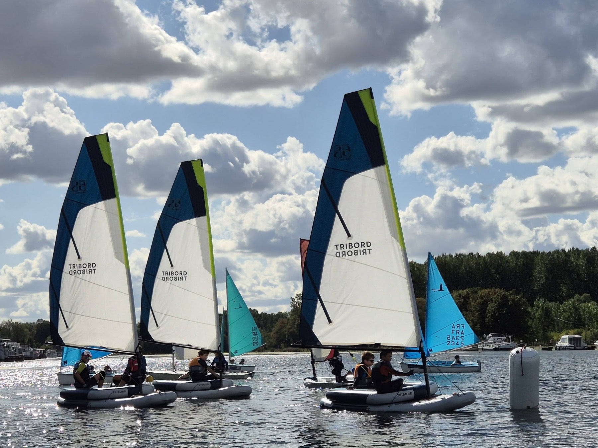
Votre moment au CDPA Bassin-Rond
-
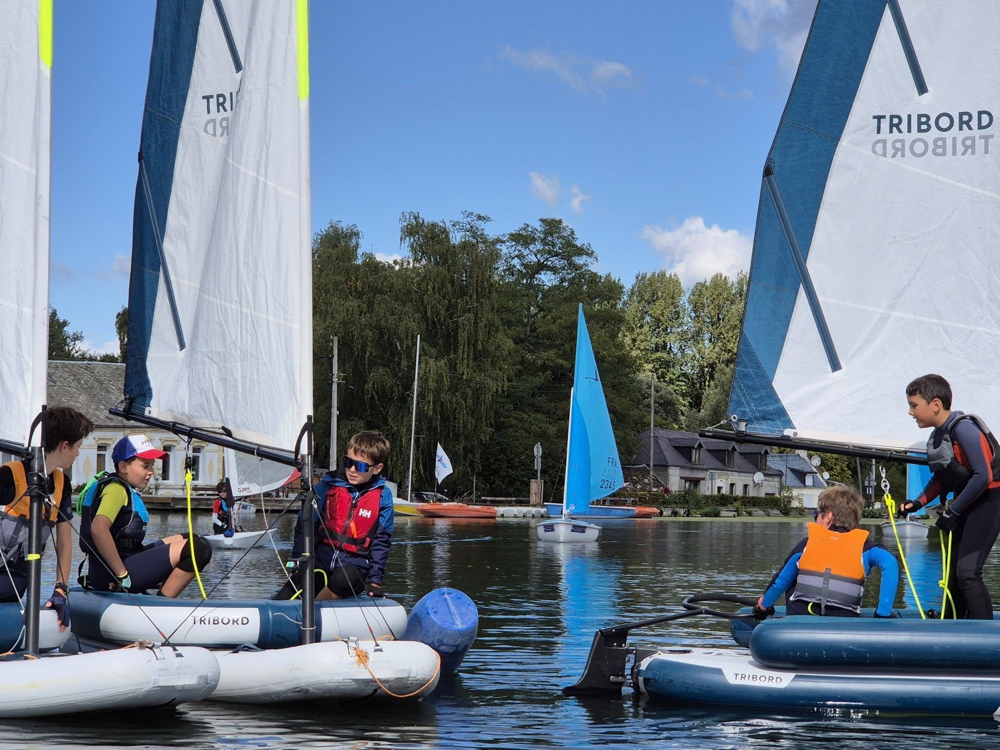
Un stage pour mon enfant… ou pour moi Stages jeunes de 7 à 17 ans, et stages adultes Voir les dates -
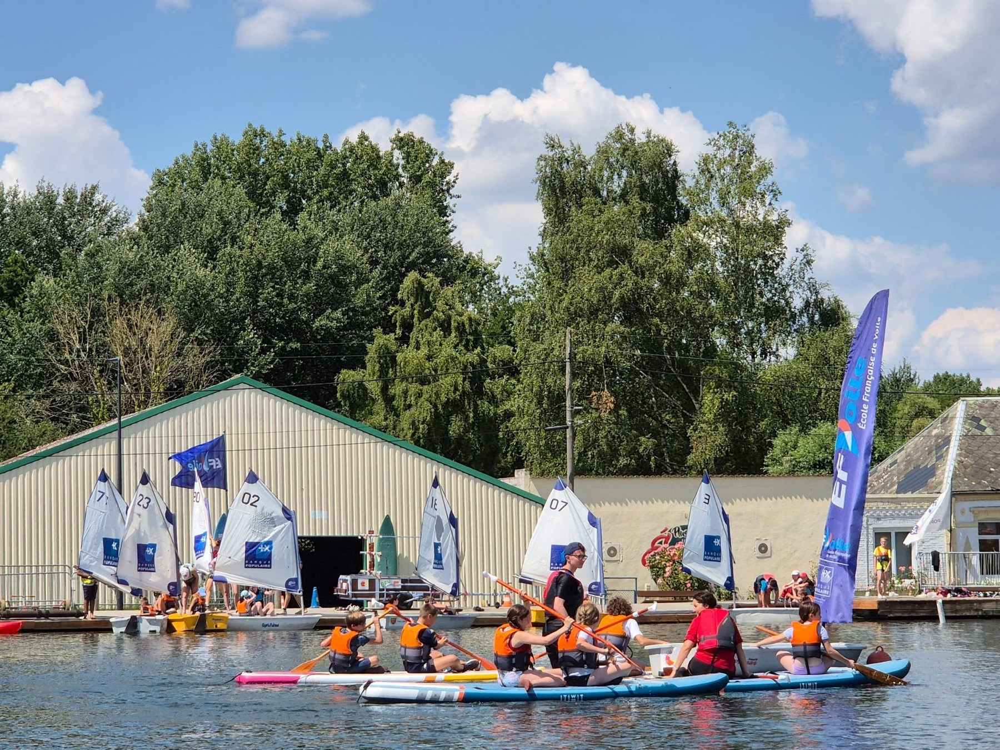
Venir en groupe Les formules centres aérés -
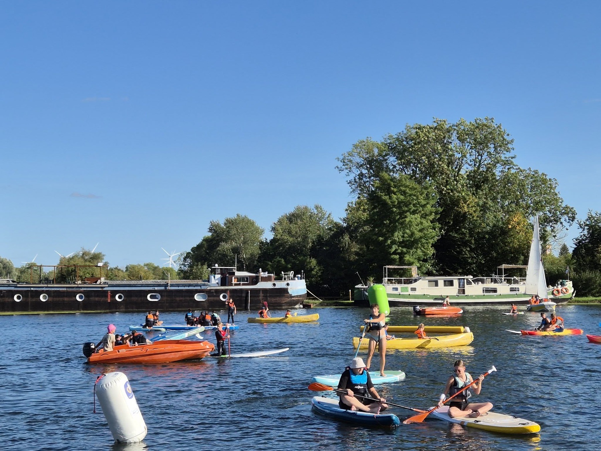
Louer un bateau Canoë, kayak, paddle, Hansa Réserver un créneau -
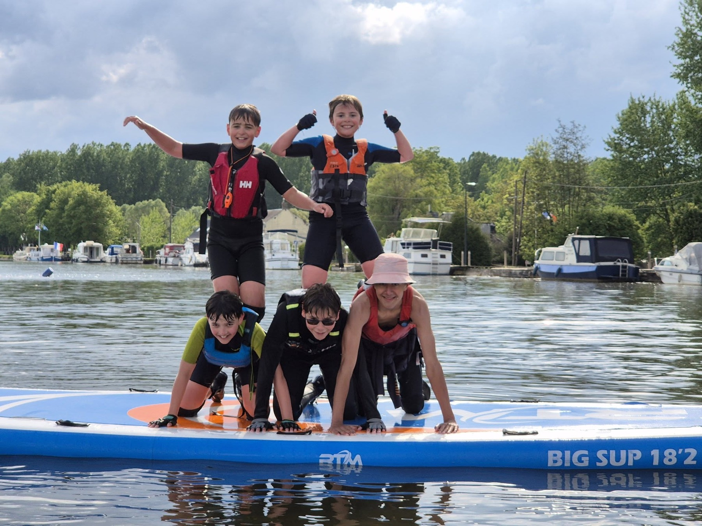
Naviguer toute l'année L'adhésion au club
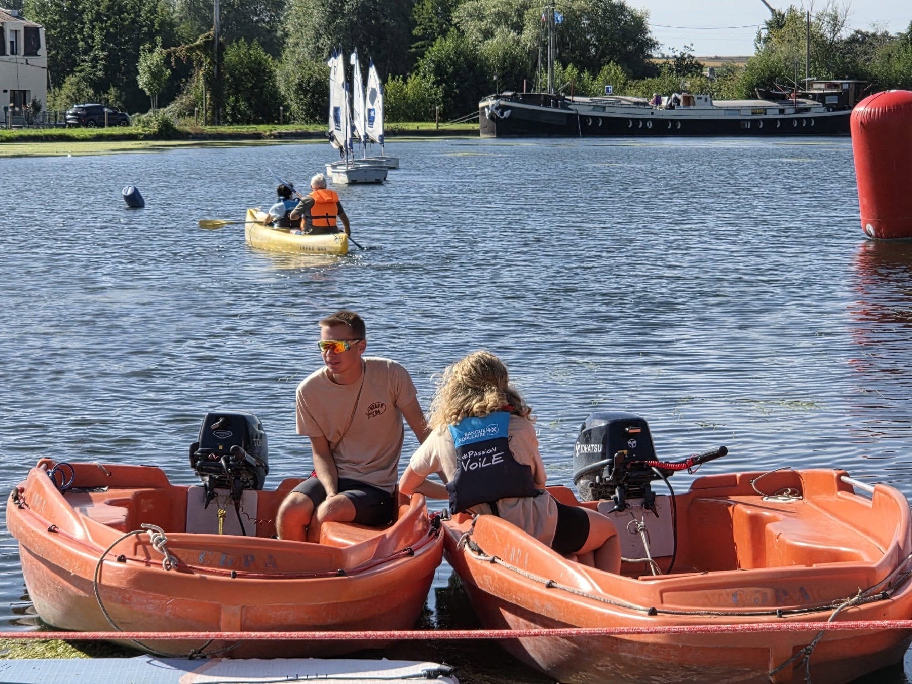
L'eau d'abord, la forêt tout autour
Le Bassin-Rond est un plan d'eau intérieur, calme et protégé. Les péniches rappellent le passé batelier du site, la forêt borde les rives, et l'on y glisse sur un moyen de locomotion écologique, non bruyant et non polluant.
C'est un terrain idéal pour apprendre : on navigue dans un contexte sécurisé, quel que soit son âge et son profil.
Un stage pour mon enfant… ou pour moi
Stages jeunes : 14 h – 17 h, pendant les vacances
Pendant les vacances scolaires, les jeunes de 7 à 17 ans passent leurs après-midi sur l'eau, à la semaine. Ils sont encadrés par des moniteurs diplômés d'État, sur un plan d'eau calme où l'on progresse vite, du premier bord aux manœuvres avancées. Beaucoup reviennent d'une année sur l'autre.
Le club propose aussi des stages pour les adultes : les sessions ouvertes sont annoncées sur le site des stages.
Voir les dates et s'inscrire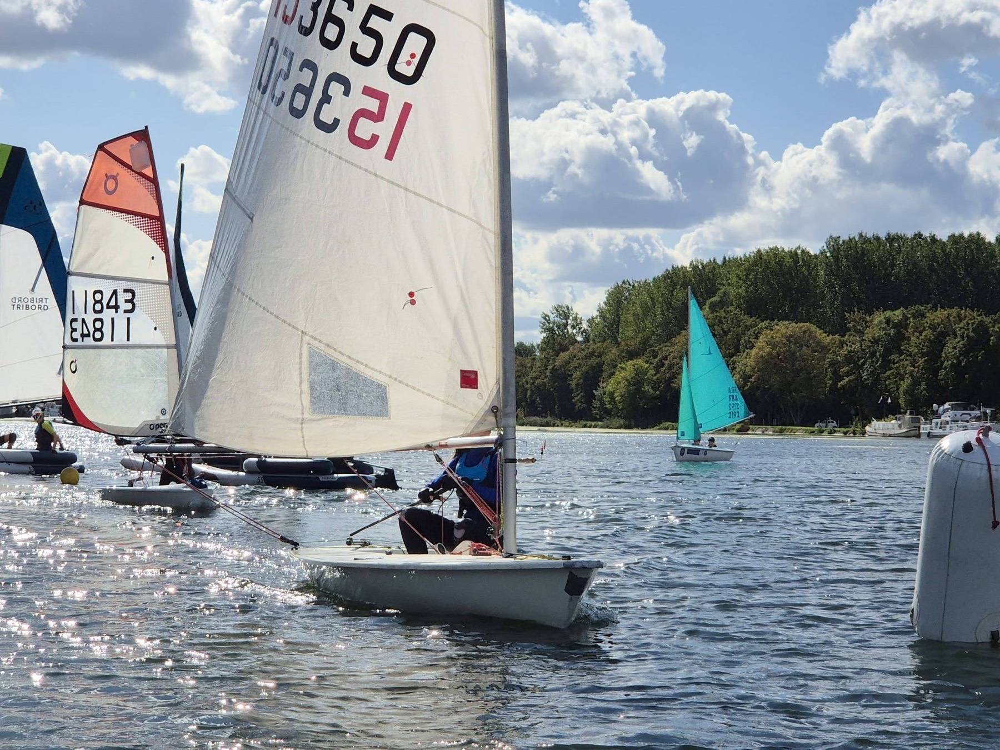
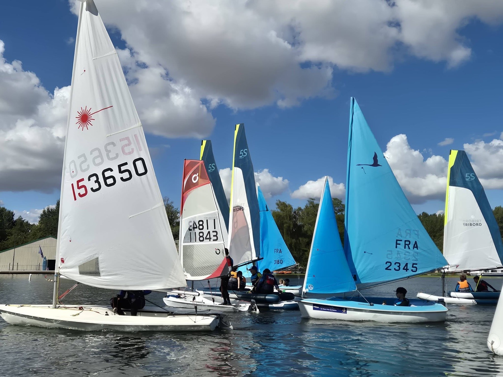
Un bateau pour chaque âge
- dès 7 ansOptimistLE bateau pour découvrir la voile en toute sécurité.
- à deuxCatamaran Newcat 12Pour les plus jeunes : à deux, plein de place, plus rigolo.
- solo ou doubleRS QubaUltra polyvalent, parfait pour débuter en solo ou en double.
- dès 11 ansOpen BicIl faut déjà avoir du niveau pour grimper cette monture.
- dès 14 ansIlcaVif, rapide et adaptable : des sensations assurées.
- à deux420À deux équipiers, pour débuter et aller jusqu'à la compétition.
- à plusieursLudicBateau collectif, pour découvrir la voile tout en douceur.
- à deuxHansaBateau double, adapté au handicap et facile à prendre en main.
Venir en groupe
Les formules ci-dessous sont réservées aux centres aérés : séjours de 4 ou 5 jours, à la journée ou à la demi-journée. Groupes de 6 personnes minimum ; les tarifs comprennent l'encadrement et le matériel pour les activités.
Comité d'entreprise, journée d'intégration ou autre groupe ? Le club vous accueille aussi : contactez-nous pour organiser votre venue.
4 jours de stage
-
Multi activités
86 € par personne
2 activités différentes par jour dont une séance de voile. L'occasion de découvrir la diversité de nos activités avec la voile comme fil rouge du séjour.
-
Nature Le plus demandé
67,50 € par personne
1 activité de 2 heures par jour. Cette formule permet de prendre son temps et d'organiser des balades pédestres autour du site du Bassin-Rond.
-
À la ½ journée
20 € par personne
Pour la demi-journée.
5 jours de stage
-
Multi activités
100 € par personne
2 activités différentes par jour dont une séance de voile. L'occasion de découvrir la diversité de nos activités avec la voile comme fil rouge du séjour.
-
Nature Le plus demandé
81 € par personne
1 activité de 2 heures par jour. Cette formule permet de prendre son temps et d'organiser des balades pédestres autour du site du Bassin-Rond.
-
À la journée
35 € par personne
Pour la journée.
Camping et cotisation groupe
| Cotisation groupe | 74 € par groupe |
|---|---|
| Camping 4 jours | 23 € par personne |
| Camping 5 jours | 27 € par personne |
| Camping à la journée stage de moins de 4 jours | 8,75 € par personne et par jour |
| Forfait énergie pour l'utilisation de plaques de cuisson électriques | 55 € en sus |
Le livret de certification
Le club peut délivrer à vos jeunes un livret certifiant le niveau atteint en fin de stage de voile : une carte de progression, un carnet de certification de l'expérience et une licence valable dans toutes les Écoles Françaises de Voile.
14 € le livret, dont 7 € pris en charge par le club (50 %). Il reste 7 € par livret à votre charge, si vous choisissez ce mode de validation.
Louer un bateau, en famille ou entre amis
Pas besoin d'être licencié : on choisit son embarcation et son créneau en ligne, on règle, et la confirmation arrive par e-mail avec un QR code d'accès. Débutants bienvenus.
Réserver une embarcationNaviguer toute l'année
Devenir adhérent, c'est naviguer au fil des saisons dans un club sérieux et convivial : 140 licenciés et 3 labels fédéraux.
Adultes
313 € l'année
soit 9,80 € la séance
- Cotisation
- 41 €
- Licence
- 72 €
- Forfait séances
- 200 €
Ilca, 420, RS Quba, Hansa
Jeunes
262 € l'année
soit 8,20 € la séance
- Cotisation
- 29 €
- Licence
- 33 €
- Forfait séances
- 200 €
Optimist, RS Quba, Open Skiff, Newcat 12, Hansa
Les 24 heures du Bassin-Rond Chaque année, le premier week-end de septembre
Depuis le début des années 2000, l'évènement réunit plus de 5000 personnes sur un week-end. Reconnue d'intérêt communautaire, la manifestation est autant sportive que culturelle, et ouverte à tous, adhérent ou non.
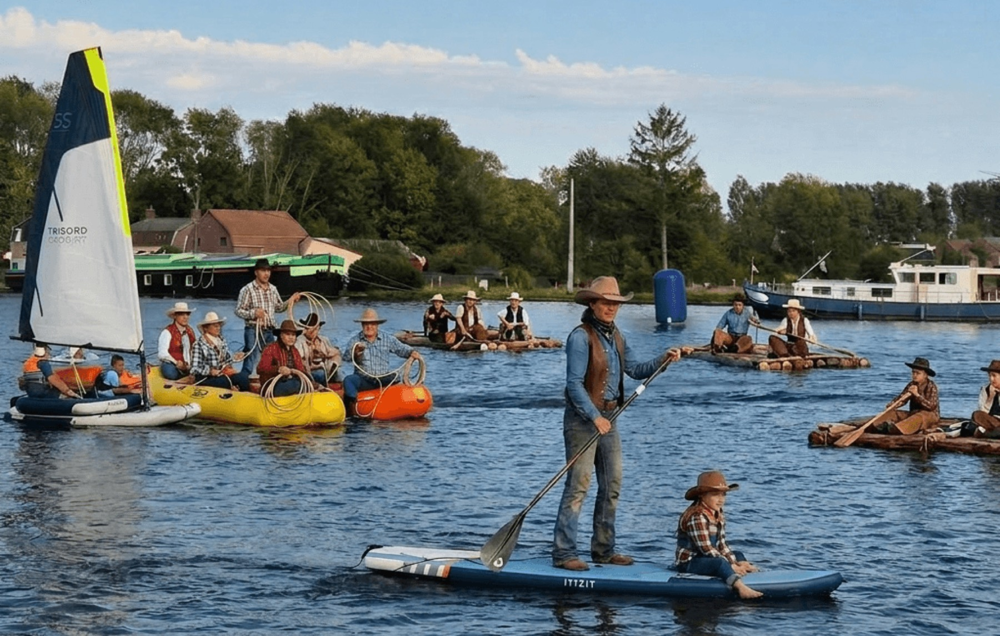
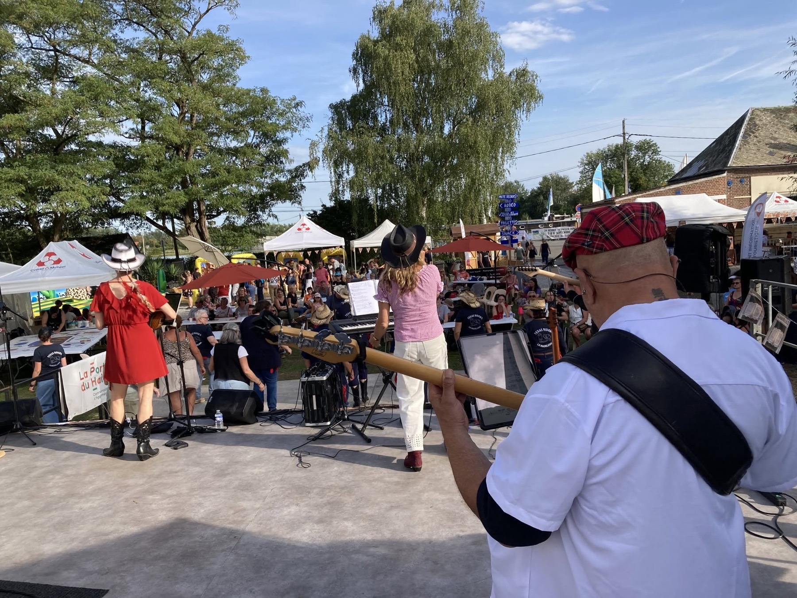
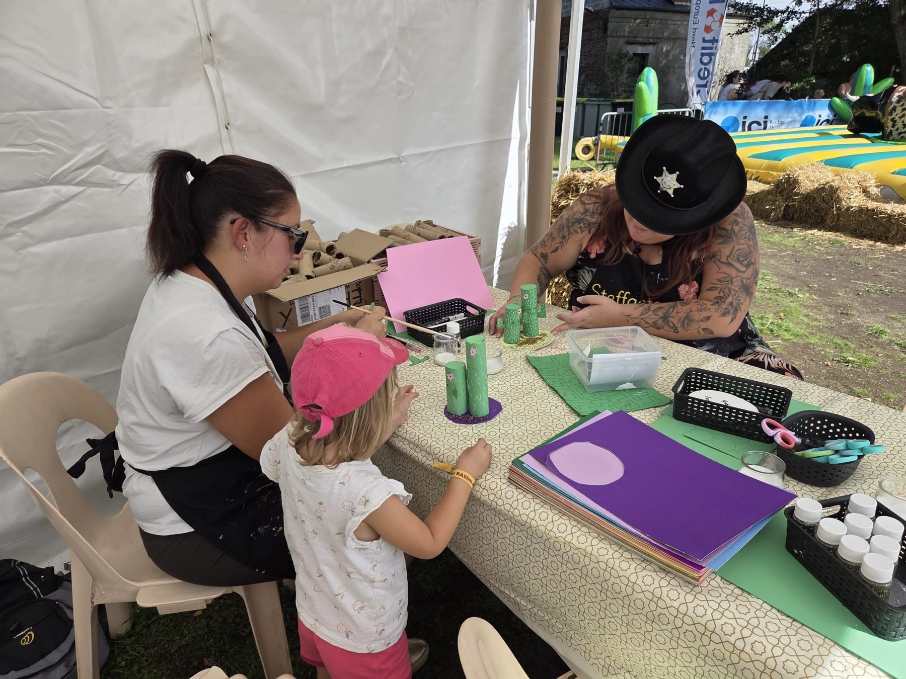
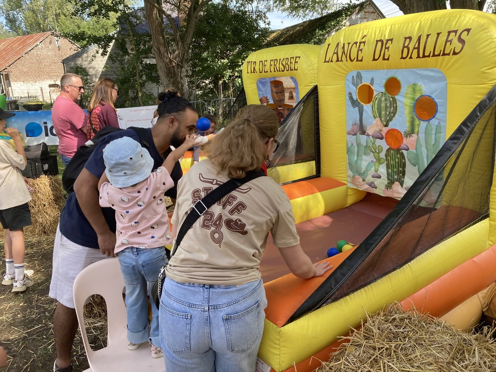
- Baptêmes nautiques
- Concert
- Jeux
- Ateliers créatifs
On parle de nous
Télévision, radio, office de tourisme : les reportages consacrés au club, du plus récent au plus ancien.
-
Voir la vidéo : En vadrouille sur Wéo (nouvel onglet)
En vadrouille sur Wéo
Wéo · — Une présentation de nos activités pour le magazine En vadrouille.
-
Voir la vidéo : Interview sur Wéo (nouvel onglet)
Interview sur Wéo
Wéo · — À l'occasion de la 20e édition des 24 heures du Bassin-Rond.
-
Voir la vidéo : Le club mis en avant (nouvel onglet)
Le club mis en avant
Office de Tourisme de la Porte du Hainaut · — Une mise en avant du club par l'Office de Tourisme.
-
Écouter : Le club sur les ondes (nouvel onglet)
Le club sur les ondes
France Bleu Nord · — Un reportage diffusé dans les informations toute la journée.
-
Voir la vidéo : Reportage sur nos activités (nouvel onglet)
Reportage sur nos activités
Wéo Grand Place · — Les activités du club présentées par Wéo Grand Place.
-
Voir la vidéo : L'été au Bassin-Rond (nouvel onglet)
L'été au Bassin-Rond
France 3 régional · — Les activités d'été au Bassin-Rond.
-
Voir la vidéo : Les 24 heures et l'histoire du lieu (nouvel onglet)
Les 24 heures et l'histoire du lieu
France 3 régional · — Nos 24 heures du Bassin-Rond et l'historique du site.
-
Voir la vidéo : Les scolaires sur l'eau (nouvel onglet)
Les scolaires sur l'eau
Matinale de France 3 régional · — Les activités scolaires au Bassin-Rond.
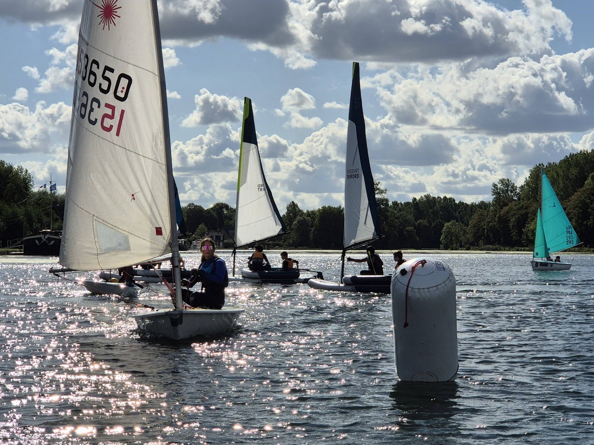
La vie du club, en images
-
La vie de nos jeunes navigateurs
2019 — Comment nos jeunes et nouveaux navigateurs commencent au club.
Voir la vidéo : La vie de nos jeunes navigateurs (nouvel onglet) -
Les 24 heures du Bassin-Rond vues du ciel
Filmées en 2019 — Tout le site et le bassin filmés depuis les airs.
Voir la vidéo : Les 24 heures du Bassin-Rond vues du ciel (nouvel onglet) -
Accueil de nos aînés de l'EHPAD de Bouchain
Mai 2018 — Des activités récréatives proposées aux aînés.
Voir la vidéo : Accueil de nos aînés de l'EHPAD de Bouchain (nouvel onglet) -
Entraînement de l'équipe du CDPA
Tous les ans — Chaque année, les membres s'essaient à l'habitable en mer.
Voir la vidéo : Entraînement de l'équipe du CDPA (nouvel onglet)
Venir au CDPA Bassin-Rond
Adresse
CDPA Bassin-Rond
403 rue Henri Deshays
59111 Bouchain
Au centre du triangle Valenciennes, Cambrai et Douai.
ItinéraireAccueil
| Du lundi au vendredi | 9 h – 12 h 14 h – 18 h |
|---|---|
| Le samedi | 14 h – 18 h de mars à fin juin et de septembre à fin octobre |